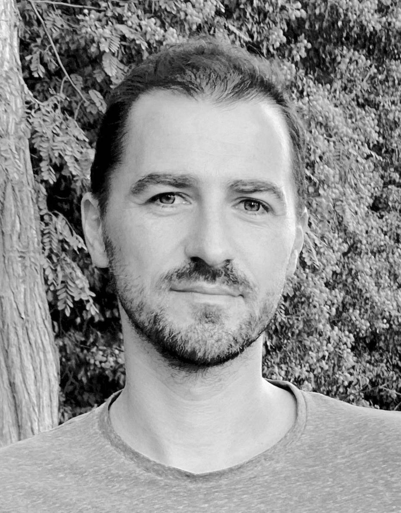
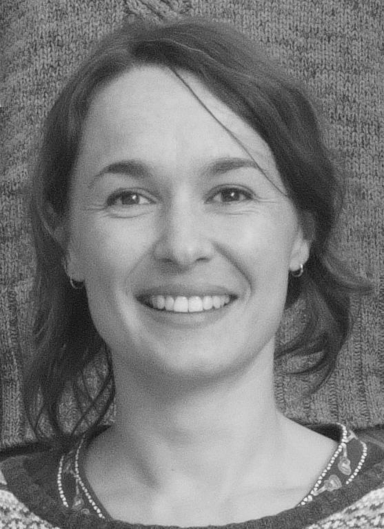

Projet territorial
Business Garden
Référence dossier 2026
Aménagement paysager à l'échelle d'un périmètre d'activités, avec gestion de l'eau et trames plantées.
Atelier de conception de paysages
Pépin Paysages conçoit les sites naturels, pars, jardins publics et plannifie les territoires méditerranéens – de la graine à l'horizon.
De l'espace de proximité au grand territoire
Référence dossier 2026
Aménagement paysager à l'échelle d'un périmètre d'activités, avec gestion de l'eau et trames plantées.

Référence dossier 2026
Composition végétale productive et usages partagés autour des continuités écologiques.

Référence dossier 2026
Renaturation et mise en scène d'un parc méditerranéen avec gestion des eaux pluviales.

Référence dossier 2026
Schéma directeur paysager et écologique, scénarios d'aménagement à l'échelle communale.

Référence dossier 2026
Projet de paysage en milieu littoral, continuités écologiques et adaptation aux dynamiques hydrauliques.

Référence dossier 2026
Aménagement des espaces extérieurs et usages pédagogiques en articulation avec le cadre naturel.
Des concepts qui marquent, des jurys qui valident.
1er prix professionnel
Jardin « Entre-là » — installation vivante croisant vannerie paysagère, plantes méditerranéennes et immersion sensible. Budget 120 k€.
Finaliste — 2e position
Concept « À TABLE ! » autour des usages collectifs, de l'alimentaire et de la biodiversité urbaine. Budget 250 k€.
Podgorica, Monténégro
Scénario d'aménagement des berges fondé sur le génie végétal et la culture de l'eau éphémère. Budget 8 640 k€.
1er prix · Festival des Jardins 2023
Un jardin où le végétal tisse l'espace. Vanneries paysagères, essences méditerranéennes, immersion sensible.
Voir le planSix savoir-faire complémentaires qui structurent chaque projet, de l’observation du vivant à la mise en œuvre.
Accueillir l’eau, le socle de tout projet vivant, par la gestion vertueuse de la qualité du sol et de sa morphologie pour accompagner le chemin de l’eau et donner un paysage sensible.

Des plantations adaptées au changement climatique et locales, le plus possible comestibles et utiles pour une meilleure appropriation par l’Homme.
Techniques de solutions fondées sur l’observation scientifique de la nature, pour fixer des berges et augmenter la qualité de l’air et des sols (dépollutions, structure et infiltration).
Tout projet se conçoit en travaillant la cinétique, la sémiologie des espaces et les types de matières, le plus possible biosourcées.
L’Humain au cœur de nos projets : comprendre tous les usages de toutes les parties vivantes sur un site d’étude.

Faire évoluer constamment les pratiques, en fonction d’expérimentations et de nouvelles découvertes.
En renouvellement constant, nous recherchons d’autres techniques et interactions pour les milieux vivants à toutes les échelles. Notre démarche systémique est tournée vers la collaboration avec des professionnels du territoire (écologues, architectes, urbanistes, artisans, chercheurs, sociologues, etc.) et des citoyens.

Président de
la SAS Pépin Paysages
Stratégie de développement et
Administration

Paysagiste-conceptrice Diplômée
d’État
Cheffe de Projet
Collaboratrice du Paysagiste-concepteur – Architecte Diplômée d’État
Chargée de projets
& Associés — Peter Grant (Paysagiste-concepteur D.E., ingénieur en environnement et génie civil), Marine Schmerber (Paysagiste-conceptrice D.E.), Carine Bunel (Programmiste, Prémices), Séverine Venat (Écologue, Tine-étude), Claude Chalita (Agronome, Véran Costamagna), Architectes D.E. : Pascal Costamagna (Techni architecture), Gaël Sellier (Bancau Architectes), Olivier Nicoletti (ON Architecture).
Contact
Nous répondons aux directions de l'urbanisme, services espaces verts et groupements de MOE sous 48h ouvrées.
06 25 90 77 06 contact@pepin-paysages.com 39 rue Estrabarry, 06620 Le Bar-sur-LoupRGPD : vos données servent uniquement à vous répondre. Archivées sur cloud sécurisé.